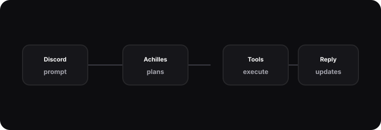

Achilles · Discord-resident AI assistant
A teammate-shaped interface for generation, transcription, scheduling, and small operational tasks.

Why Discord
Achilles began as a practical question: what would an AI assistant look like if it lived where I already coordinate casual work? Discord is fast, searchable, familiar, and good at asynchronous progress updates. That made it a useful surface for long-running tasks such as media generation, YouTube transcription, and scheduled reminders.
The goal was not to make a novelty bot. The goal was to make an operator that could accept a request, decide whether it had enough context, call a tool through a narrow interface, and report progress in a way that made the system feel accountable. When a render is pending or a transcript is still being processed, silence is bad UX. Achilles treats status updates as part of the contract.
Operating model
The assistant keeps platform concerns separate from task concerns. Discord provides the message, attachments, and delivery channel. Hermes normalizes that into a session. Achilles then plans the work with the same durable memory and skills system available to the rest of the platform.
I learned to keep tool access boring on purpose. A video request should not grant broad filesystem access. A transcription request should not imply arbitrary network fetches outside the intended media URL. Each capability is shaped as an explicit operation with inputs, outputs, failure states, and user-facing messages.
# illustrative
async def handle_media_request(request):
plan = await planner.create(request.text, tools=["video", "image", "transcript"])
await request.reply("Accepted. I will post progress as each step completes.")
for step in plan.steps:
result = await tools.run(step.name, step.inputs)
await request.reply(step.status_message(result))
return await request.reply("Delivered. I saved a short summary for later iteration.")Trade-offs
The main trade-off is personality versus predictability. A memorable assistant is easier to use because it feels like a consistent collaborator, but an overly theatrical assistant can hide important uncertainty. I bias Achilles toward directness: say what is happening, what is blocked, what will happen next, and what artifact was produced.
Another trade-off is tool breadth. It is tempting to connect every capability immediately. In practice, the reliable path is to add one tool at a time, write the user-visible states, and make sure failures are graceful. Recruiter-facing polish comes from boring details: retries, short summaries, clear permission boundaries, and enough logging to debug what happened later.
The assistant also needs to know when to ask rather than act. A vague creative request can usually be improved with one clarifying question, while a low-risk draft can be produced immediately and refined after feedback. I treat that as a product decision, not a model decision. The surrounding code decides which tasks are safe to start, which require confirmation, and which should be refused because the requested action is outside the tool boundary.
That approach keeps the experience calm. Achilles can have a distinct voice without becoming unpredictable, and it can call powerful services without implying unlimited authority. The system is most impressive when it feels ordinary: a request enters, a plan appears, work progresses, and the final artifact arrives with enough context to continue.
What I learned
Interfaces for agents are mostly operations design. The model can generate text, but the product quality comes from how requests are shaped, how progress is communicated, and how state is preserved. Achilles taught me that an agent becomes useful when it can be interrupted, observed, corrected, and asked to continue from a known baseline.